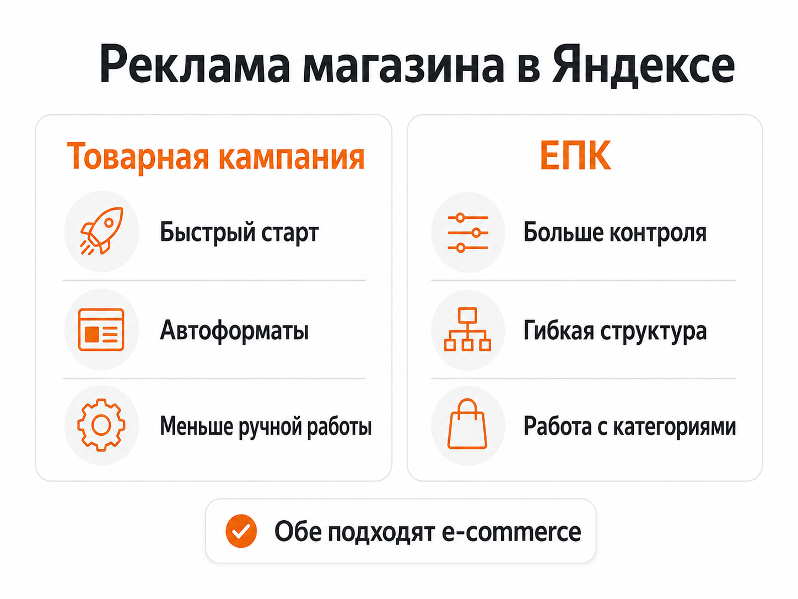
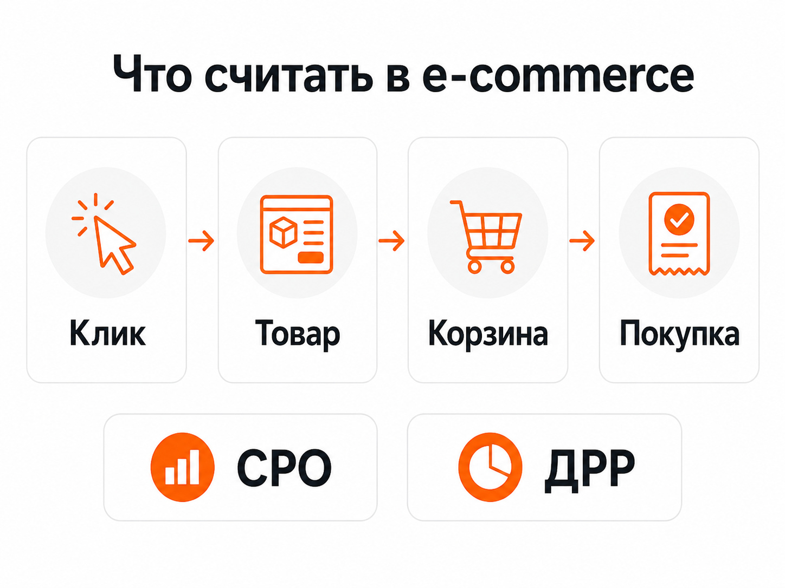

Блог о платном трафике
Реклама интернет-магазина в Яндексе: как получать продажи через Директ
Реклама интернет-магазина в Яндексе строится не вокруг одного объявления и списка ключевых фраз. Для e-commerce Яндекс Директ умеет автоматически рекламировать конкретные товары и категории, использовать данные фида, показывать предложения в Поиске, РСЯ и Товарной галерее и оптимизировать кампании под покупки.
Главное до запуска - правильно передать Директу ассортимент и данные о продажах. Если система видит актуальные товары, цены, наличие и реальные покупки, ей значительно проще искать покупателей, а рекламодателю - оценивать рекламу по заказам и выручке, а не по кликам.
Статья «Как настроить рекламу в Яндекс Директ в 2026 году»
Какие форматы рекламы подходят интернет-магазину
В 2026 году у интернет-магазина есть два основных способа запуска товарной рекламы: Товарная кампания и Единая перфоманс-кампания.
Товарная кампания
Это более простой вариант. Директ получает информацию о магазине и ассортименте, автоматически создает объявления для отдельных товаров и страниц каталога и распределяет показы между площадками.
Товарные объявления могут появляться:
- в результатах поиска Яндекса;
- в Товарной галерее;
- на площадках РСЯ.
Информацию о товарах можно получить непосредственно с сайта или из фида. Для большого и постоянно меняющегося каталога я предпочитаю фид, потому что через него проще передавать актуальные цены, наличие, категории и другие параметры.
Яндекс также рекомендует при запуске Товарной кампании использовать бюджет, достаточный минимум для 10 конверсий в неделю, чтобы алгоритму хватало данных для обучения.
Единая перфоманс-кампания
ЕПК подходит, когда требуется больше контроля над рекламой. Здесь можно самостоятельно управлять структурой, местами показа, группами товаров, условиями отбора и разными типами объявлений.
Для интернет-магазина в ЕПК можно использовать товарные объявления, страницы каталога и комбинаторные объявления. Товарные объявления и страницы каталога создаются по данным сайта или фида.
Старые текстово-графические объявления в ЕПК уже не стоит рассматривать как основной формат. С 30 июня 2026 года они доступны только для редактирования, а Яндекс переводит такие задачи на комбинаторные объявления.
| Вариант | Когда использовать |
|---|---|
| Товарная кампания | Нужен быстрый запуск и автоматизация |
| ЕПК | Нужен более точный контроль структуры и товаров |
| Товарные объявления | Продвижение конкретных позиций |
| Страницы каталога | Продвижение категорий и подборок |
| Комбинаторные объявления | Дополнительный охват и работа с разными рекламными сообщениями |

Фид - основа рекламы большого ассортимента
Если в магазине несколько десятков товаров, Директ может получить данные прямо с сайта. Когда товаров сотни или тысячи, вручную управлять рекламой каждой позиции практически бессмысленно.
Для этого используется фид - структурированный файл с информацией об ассортименте.
В него могут входить:
- название товара;
- ссылка на карточку;
- цена;
- изображение;
- категория;
- производитель;
- описание;
- наличие;
- другие характеристики.
Директ анализирует эти данные и автоматически создает товарные объявления. Сейчас фиды используются как в Товарных кампаниях, так и в товарных объявлениях и объявлениях для страниц каталога в ЕПК.
Для классического интернет-магазина Яндекс рекомендует YML. Он позволяет передать много данных о товаре и точнее управлять отбором позиций для рекламы.
Если цена или наличие часто меняются, фид лучше подключать по ссылке и обновлять автоматически. Иначе легко получить ситуацию, когда в рекламе показывается товар, которого уже нет, или старая цена.
Что нужно настроить на сайте до запуска
Проблемы интернет-магазинов часто начинаются не в рекламном кабинете, а на сайте.
Перед запуском я проверяю:
- Корректно ли открываются карточки товаров.
- Совпадают ли цены на сайте и в фиде.
- Передается ли наличие.
- Понятны ли условия доставки и оплаты.
- Удобно ли оформить заказ с телефона.
- Работают ли корзина и оформление заказа.
- Установлена ли Яндекс Метрика.
- Передаются ли покупки и их стоимость.
Последний пункт особенно важен.
Для интернет-магазина желательно настроить электронную коммерцию в Метрике. Тогда можно видеть конкретные покупки, товары и выручку, а Директ получает более качественный сигнал для автоматических стратегий. Яндекс рекомендует использовать финальные цели, в том числе «Ecommerce: покупка», а для оптимизации по ДРР передавать доход.
На какую цель оптимизировать рекламу
Для интернет-магазина основная цель - покупка.
Добавление товара в корзину, просмотр карточки или начало оформления заказа полезны для анализа воронки, но это еще не продажа.
Если покупок достаточно для обучения алгоритма, лучше оптимизироваться именно на них. Тогда Директ ищет аудиторию, которая с большей вероятностью совершит нужное бизнесу действие.
При небольшом объеме продаж приходится аккуратнее работать со стратегией и промежуточными целями. Ошибка здесь простая: если сказать алгоритму, что главная задача - получить как можно больше добавлений в корзину, он действительно может привести много корзин. Но это не означает, что количество оплаченных заказов вырастет пропорционально.
Поиск, РСЯ и Товарная галерея
Не стоит сводить рекламу магазина только к обычным поисковым объявлениям.
Поиск
На Поиске можно работать с уже сформированным спросом. Пользователь знает, что ему нужно, вводит запрос и выбирает предложение.
Например:
- купить японскую косметику;
- заказать мясные деликатесы;
- купить конкретную модель товара;
- интернет-магазин определенной категории.
Для части ассортимента такой трафик может быть очень ценным, но пытаться вручную собрать ключевые запросы для нескольких тысяч товаров обычно нет смысла.
Товарная галерея
Товарная галерея показывает пользователю карточки товаров прямо в поисковой выдаче. Там могут отображаться изображение, цена и другие данные предложения.
Товарные объявления для нее можно запускать через Товарную кампанию или ЕПК.
Для магазина это важный формат, потому что пользователь еще до перехода на сайт видит конкретное предложение, а не абстрактное объявление компании.
РСЯ
РСЯ позволяет работать с пользователями вне обычного поискового запроса. Здесь особенно полезны товарные форматы и возврат аудитории, которая уже смотрела товары или взаимодействовала с магазином.
Например, человек посмотрел несколько моделей, но не оформил заказ. Позже ему можно снова показать релевантное предложение.
Как я разделяю товары в рекламных кампаниях
У интернет-магазина товары почти никогда не одинаковы с точки зрения бизнеса.
У одной категории выше маржа, у другой - средний чек. Одни товары постоянно есть на складе, другие быстро заканчиваются. Есть бестселлеры, новинки и позиции, которые почти не продаются.
Поэтому я не люблю структуру, где весь каталог бесконтрольно складывается в одну кампанию.
Имеет смысл отдельно анализировать:
- категории товаров;
- маржинальность;
- стоимость заказа;
- объем продаж;
- наличие;
- сезонность;
- эффективность конкретных групп товаров.
При этом обратная крайность тоже вредна. Делить каталог на сотни маленьких кампаний без причины - значит дробить статистику, которая нужна алгоритмам для обучения.
Структура должна помогать управлять экономикой, а не просто выглядеть сложной.
Какие показатели смотреть
Для интернет-магазина CTR и стоимость клика - диагностические показатели. Они помогают понять, что происходит с рекламой, но сами по себе ничего не говорят о прибыли.
Я в первую очередь смотрю на показатели ближе к продаже.
CPO - стоимость одного заказа.
Формула:
расход на рекламу / количество заказов
ДРР - доля рекламных расходов.
Формула:
расход на рекламу / выручка с рекламы × 100%
Дополнительно нужно анализировать:
- количество покупок;
- выручку;
- средний чек;
- конверсию сайта;
- отмененные заказы;
- возвраты;
- маржинальность;
- повторные покупки, если они существенны для бизнеса.
Два магазина с одинаковой стоимостью заказа могут иметь совершенно разную экономику. Поэтому универсальной «хорошей стоимости покупки» не существует.

Что показывают реальные проекты
В интернет-магазинах особенно хорошо видно, почему рекламу нужно оценивать по конечной продаже.
В одном из моих проектов для интернет-магазина «Мясницкий ряд» через рекламу получили 69 покупок со стоимостью покупки 408 ₽.
Кейс интернет-магазина «Мясницкий ряд»
В другом проекте с японской косметикой при рекламных расходах около 64 000 ₽ получили выручку около 656 000 ₽.
Кейс интернет-магазина японской косметики
Сами цифры нельзя переносить на другой магазин как ориентир. Категория товаров, средний чек, маржа, узнаваемость бренда, сайт и спрос отличаются.
Но оба примера показывают правильный принцип оценки: интернет-магазину нужно считать не стоимость трафика, а связь между рекламными расходами и фактическими продажами.
Как оптимизировать рекламу после запуска
Запуск - только начало работы. После накопления статистики я обычно двигаюсь по следующей логике.
Проверяю реальные продажи
Сначала нужно убедиться, что покупки корректно доходят до Метрики и Директа. Если аналитика считает заказы неправильно, дальнейшая оптимизация строится на ошибочных данных.
Смотрю эффективность категорий и товаров
Часть ассортимента может приносить большую часть продаж, а некоторые позиции - регулярно расходовать бюджет без заказов.
Это повод менять фильтры, структуру кампаний и распределение бюджета.
Проверяю поисковые запросы и площадки
Даже автоматизированную рекламу нельзя полностью оставлять без контроля. Нужно видеть, по каким запросам и где фактически показываются объявления.
Анализирую экономику
Если кампания дает много заказов, но ДРР выше допустимой для бизнеса, масштабировать ее просто ради количества продаж нельзя.
Сначала нужно понять, какие товары, аудитории и форматы дают нормальную экономику.
Не меняю кампанию каждый день
Алгоритмам требуется статистика. Постоянная смена целей, бюджета, стратегии и структуры мешает нормально оценить результат.
Изменение должно происходить потому, что появились данные, а не потому, что в рекламном кабинете несколько дней ничего не меняли.
Частые ошибки при рекламе интернет-магазина
Запустить весь ассортимент без аналитики. Директ будет получать трафик, но рекламодатель не поймет, какие товары реально окупаются.
Не использовать фид при большом каталоге. Управление ассортиментом становится сложнее, а актуальность данных приходится контролировать вручную.
Оптимизироваться на клики. Много дешевых переходов еще не означает много заказов.
Считать только заявки или корзины. Для интернет-магазина конечная экономика строится вокруг оплаченных покупок.
Вести пользователя на главную страницу. Если рекламируется конкретный товар или категория, человек должен попадать на максимально релевантную страницу.
Не учитывать маржу. Одинаковая ДРР для разных товарных групп может давать совершенно разную прибыль.
Постоянно перестраивать кампании. Автоматические стратегии не успевают накопить нормальную статистику.
Товарная кампания или ЕПК - что выбрать
Если магазин только запускает рекламу и нужна простая схема, я бы начинал с Товарной кампании.
Если уже есть статистика, большой ассортимент и требуется управлять отдельными категориями, местами показа и рекламными сценариями, логичнее использовать ЕПК.
Эти форматы не обязательно противопоставлять. В развитом проекте они могут работать параллельно, если у каждого есть понятная задача и результаты можно корректно сравнивать.
Яндекс сейчас сам выделяет Товарную кампанию как простой инструмент для e-commerce, а ЕПК - как решение с более широкими возможностями управления и масштабирования.
FAQ
Можно ли рекламировать интернет-магазин без фида?
Да. Директ умеет получать информацию о товарах непосредственно с сайта. Но при большом ассортименте и частых изменениях цен или остатков полноценный автоматически обновляемый фид удобнее и дает больше контроля над данными.
Сколько денег нужно на рекламу интернет-магазина в Яндексе?
Универсальной суммы нет. Бюджет зависит от категории товаров, спроса, стоимости трафика, конверсии сайта и допустимой стоимости заказа. Для автоматической стратегии важен и объем данных: слишком маленький бюджет может просто не дать алгоритму необходимое количество покупок для обучения.
Что лучше для магазина - Поиск или РСЯ?
Это разные источники трафика. Поиск работает в момент сформированного спроса, РСЯ позволяет находить пользователей по другим сигналам и возвращать аудиторию. Для e-commerce дополнительно существует Товарная галерея. Оценивать их нужно по покупкам и экономике, а не заранее выбирать один канал как единственно правильный.
Нужно ли делать отдельное объявление на каждый товар?
Вручную - нет. Товарные объявления автоматически создаются на основе сайта или фида, поэтому Директ может работать даже с каталогом из тысяч позиций.
Главное
Реклама интернет-магазина в Яндексе сейчас во многом строится на автоматизации: Директ получает каталог, формирует товарные объявления, выбирает аудиторию и оптимизирует показы.
Задача специалиста - дать алгоритму правильные данные и ограничения: настроить фид, электронную коммерцию, цели, структуру кампаний и аналитику, а затем контролировать реальные продажи, CPO и ДРР.
Если реклама оценивается именно по этой цепочке, становится понятно, какие товары стоит масштабировать, а какие просто расходуют бюджет.